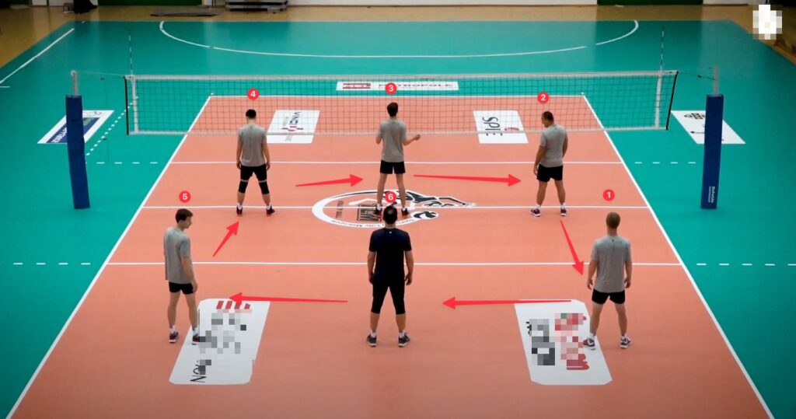
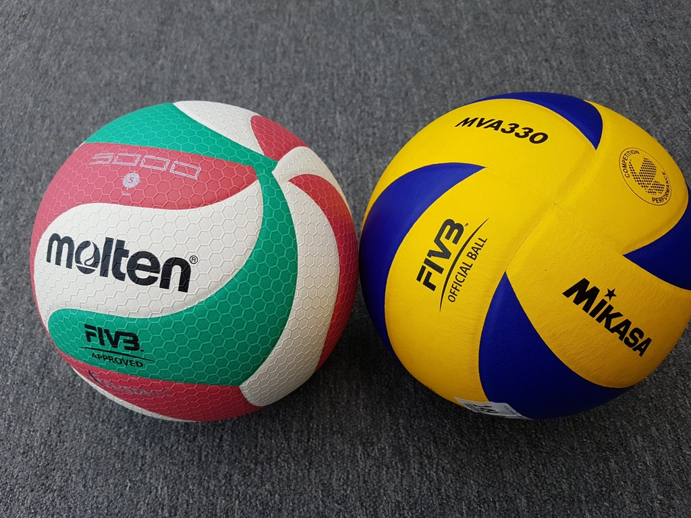

Reglas del Voleibol
El voleibol tradicional (o voleibol de cancha) tiene un conjunto de reglas establecidas por la Federación Internacional de Voleibol (FIVB) que regulan cómo se debe jugar. A continuación te presento un resumen de las reglas principales:
Composición del equipo
- Cada equipo tiene seis jugadores en la cancha.
- Los jugadores se colocan en dos filas: tres en la zona delantera (cerca de la red) y tres en la zona trasera.
- Puede haber jugadores suplentes y un jugador especial llamado líbero, que tiene funciones defensivas y lleva un uniforme diferente.
El balón
El balón es esférico, con una circunferencia de 65-67 cm y un peso de 260-280 gramos. Está hecho de cuero o material sintético y debe tener buena elasticidad.
Algunas marcas populares que fabrican balones de voleibol aprobados por la FIVB son:
- Mikasa (como el modelo V200W para cancha y VLS300 para playa).
- Molten (muy usado en competiciones de alto nivel).